Footnotes in ConTeXt · Overview · Tutorial · How-to guides · Reference · Explanation · Glossary
🚧 Under construction — This page and the related footnote documentation are currently being revised. Please do not modify their source code while this banner remains in place.
Contents
- 1 1. Aim of this tutorial
- 2 2. Create your first footnote
- 3 3. Add several footnotes
- 4 4. Give a note a stable internal reference
- 5 5. Print the same note mark again
- 6 6. Control note numbering
- 7 7. Change the body font of note entries
- 8 8. Postpone notes and place them explicitly
- 9 9. Complete example
- 10 10. What this tutorial has established
- 11 11. Next steps
1. Aim of this tutorial
This tutorial introduces the basic note mechanism in ConTeXt by building a small document step by step.
By the end, you will know how to:
- create an ordinary footnote;
- add several footnotes;
- give a note a stable internal reference;
- print the same note mark again;
- refer to a note number or page;
- control how note numbers are displayed and reset;
- change the body font used for note entries;
- postpone notes and place them explicitly;
- combine these elements in a complete working example.
What you need
A current ConTeXt LMTX installation and a text editor are sufficient.
Each MWE on this page is complete and can be compiled independently. Short syntax fragments are shown separately for quick reference.
2. Create your first footnote
An ordinary footnote is created with:
\footnote{note text}
The command inserts a note mark in the running text and places the corresponding note entry at the bottom of the page.
2.1. MWE: an ordinary footnote
-
\setuppapersize[A6] \starttext This sentence contains a footnote.\footnote {This is the text of the footnote.} \stoptext
-
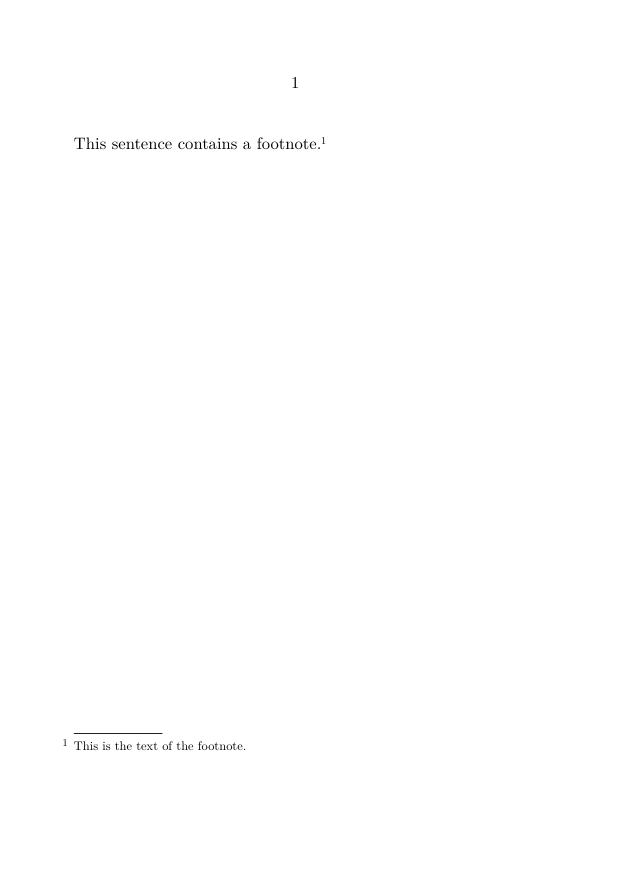
One command, two results
The command \footnote creates both the mark in the running text and the corresponding note entry.
3. Add several footnotes
ConTeXt numbers ordinary footnotes automatically.
3.1. MWE: automatic numbering
-
\setuppapersize[A6] \starttext The first statement contains a note.\footnote {This is the first note.} The second statement contains another note.\footnote {This is the second note.} \stoptext
-
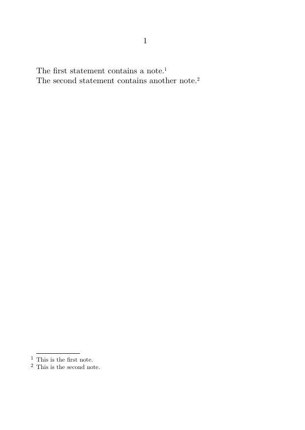
You do not need to assign the numbers yourself. If a note is inserted or removed, ConTeXt updates the sequence automatically.
3.2. MWE: formatting text inside a note
The note text may contain ordinary ConTeXt commands.
-
\setuppapersize[A6] \starttext This sentence contains a formatted note.\footnote {A note may contain \emph{emphasized text}, {\bf bold text}, references, and other ordinary commands.} \stoptext
-
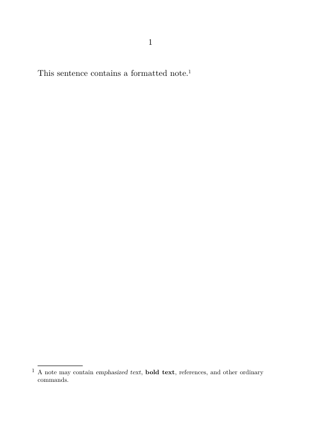
Use local emphasis sparingly. A note should normally remain visually subordinate to the main text.
4. Give a note a stable internal reference
A footnote may receive an optional internal reference:
\footnote[reference]{note text}
The internal reference remains stable even if the printed note number changes.
4.1. MWE: naming a footnote
-
\setuppapersize[A6] \starttext This statement has a named footnote.\footnote[foot:example] {This note has the internal reference \type{foot:example}.} \stoptext
-
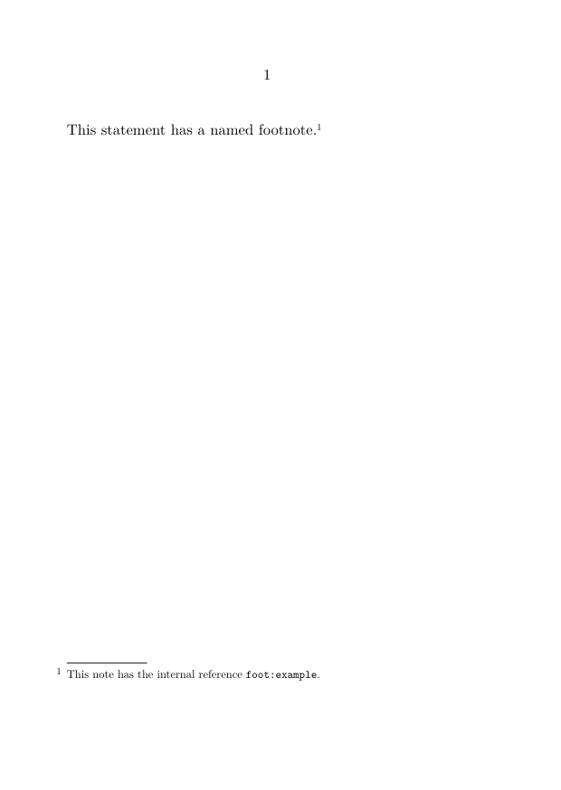
The name foot:example is not printed. It is an identifier used inside the source.
Use meaningful reference names
A reference such as foot:translation-choice is easier to maintain than a name such as foot:17, because the printed number may change.
5. Print the same note mark again
Once a note has a stable internal reference, its mark can be printed again with:
\note[reference]
5.1. MWE: repeating a note mark
-
\setuppapersize[A6] \starttext This statement has a shared note.\footnote[foot:shared] {This note is attached to more than one place in the text.} The same note mark appears again here\note[foot:shared]. \stoptext
-
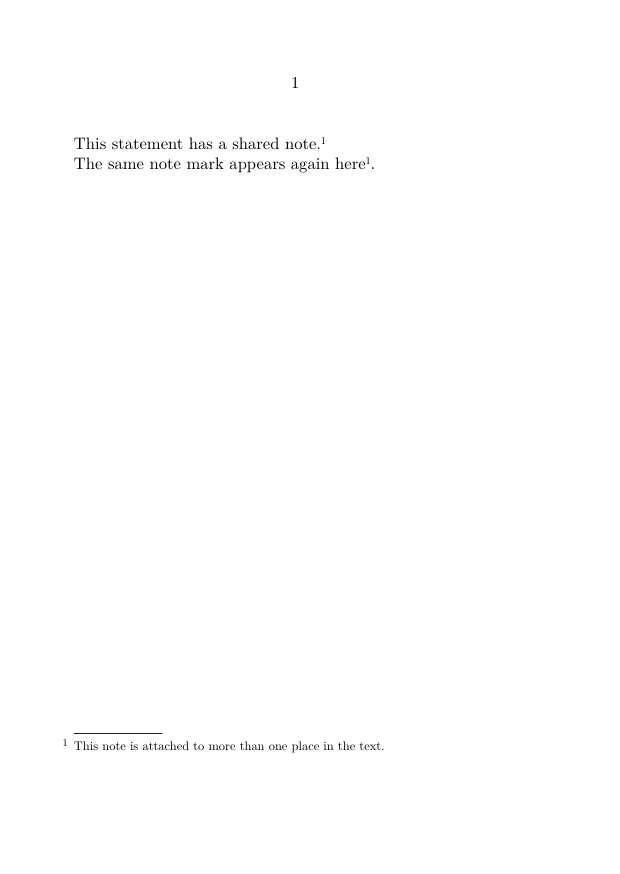
The second occurrence prints only the mark. It does not create a second note entry.
For variations and more complex cases, see:
5.2. Refer to the note number or page
A stable internal reference may also be used with ordinary cross-reference commands:
\in{footnote}[reference]
\at{page}[reference]
5.3. MWE: referring to a note
-
\setuppapersize[A6] \starttext This statement has a note.\footnote[foot:reference] {This is the referenced footnote.} The note is numbered \in{footnote}[foot:reference] and appears on \at{page}[foot:reference]. \stoptext
-
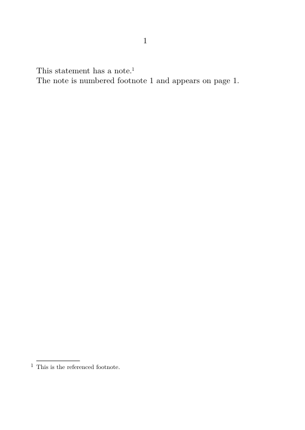
The commands serve different purposes:
| Command | Result |
|---|---|
\note[reference]
|
Prints the note mark again. |
\in{footnote}[reference]
|
Refers to the printed note number. |
\at{page}[reference]
|
Refers to the page on which the note appears. |
6. Control note numbering
The printed numbering of footnote entries is configured with:
\setupnotation [footnote] [...]
Two keys are especially useful at this stage:
-
way, which determines when the counter is reset; -
numberconversion, which determines how the current counter value is printed.
6.1. Reset the counter on each page
-
\setuppapersize[A6] \setupnotation [footnote] [way=bypage] \starttext First note.\footnote {The first note on this page.} Second note.\footnote {The second note on this page.} \page A note on the next page.\footnote {The numbering starts again on the new page.} \stoptext
-
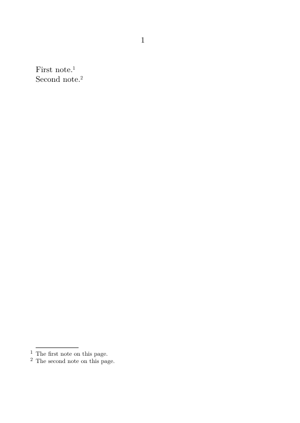
Other reset levels may be useful in structured documents:
way=bychapter way=bysection way=bytext
Choose the reset level according to the structure of the publication.
6.2. Change the printed form of the number
The following example uses a traditional sequence of footnote symbols.
-
\setuppapersize[A6] \setupnotation [footnote] [way=bypage, numberconversion=set 2] \starttext A note marked with a symbol.\footnote {The first note.} Another note.\footnote {The second note.} \stoptext
-
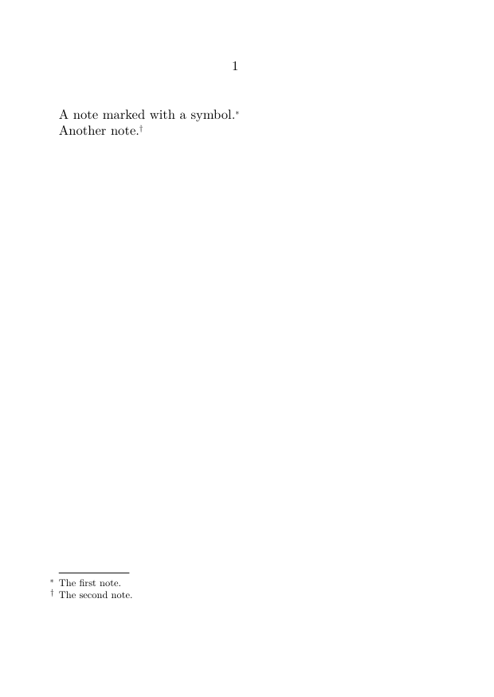
The two keys control different aspects of numbering:
| Key | Function |
|---|---|
way
|
Determines how the counter progresses and when it is reset. |
numberconversion
|
Determines how the current counter value is printed. |
7. Change the body font of note entries
The body font used for the entries of a note series can be changed with \setupnote.
7.1. MWE: smaller note entries
-
\setuppapersize[A6] \setupnote [footnote] [bodyfont=small] \starttext The main text uses the normal body-font size.\footnote {This note is typeset with the smaller body font.} \stoptext
-
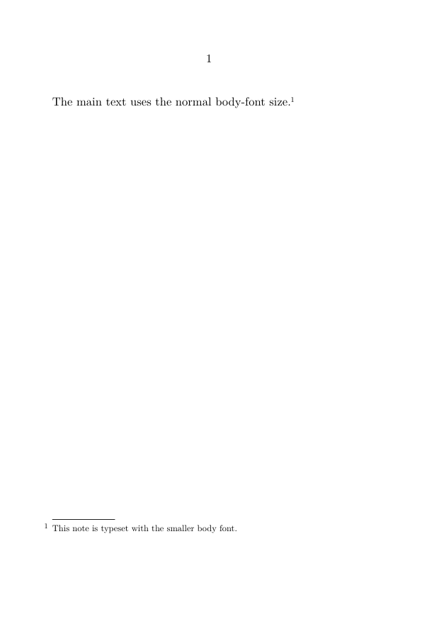
At this stage, it is useful to distinguish the principal roles of the two setup commands introduced in the tutorial:
| Command | Principal role in this tutorial |
|---|---|
\setupnote[footnote][...]
|
Configures properties of the note series, including its body font and placement. |
\setupnotation[footnote][...]
|
Configures the numbering and typographical presentation of the note entries. |
A practical distinction
In the examples on this page, \setupnote is used for the body font and placement of the note series, while \setupnotation is used for numbering and number conversion.
The Reference lists the available settings in greater detail.
More detailed formatting—such as number position, alignment, interline spacing, columns, and paragraph form—is covered in:
8. Postpone notes and place them explicitly
By default, entries in the predefined footnote series are placed at the bottom of the page.
To store them and place them later, set:
\setupnote [footnote] [location=text]
Pending footnotes can then be printed with:
\placefootnotes
8.1. MWE: postponed footnotes
-
\setuppapersize[A6] \setupnote [footnote] [location=text] \starttext This sentence contains a postponed footnote.\footnote {This note is stored until it is placed explicitly.} The main text continues before the note is printed. \subject{Notes} \placefootnotes \stoptext
-
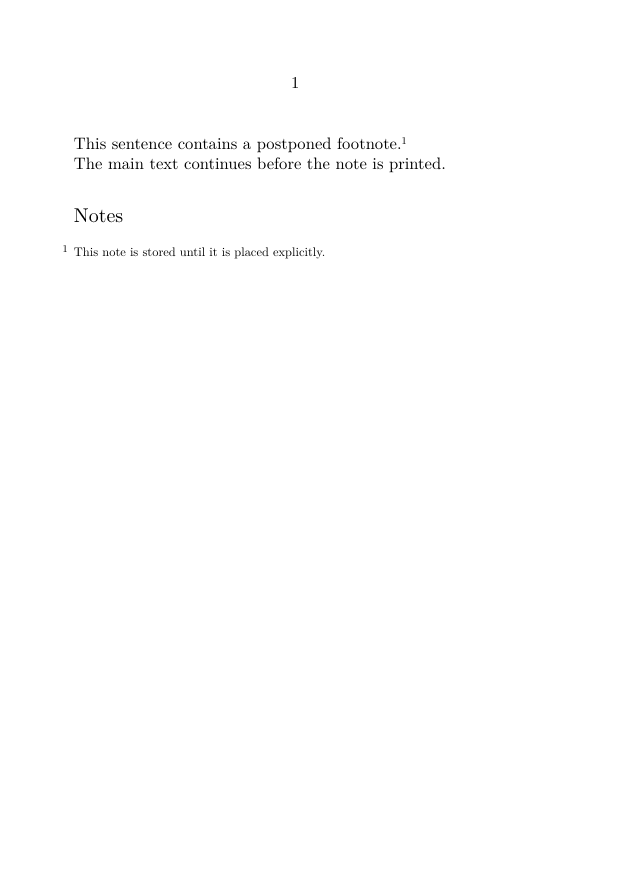
This method can be used to place pending notes:
- after a paragraph;
- at the end of a section;
- at the end of a chapter;
- at another deliberate point in the document.
For automatic or repeated placement at structural boundaries, see:
Postponed footnotes are not the same as endnotes
With location=text, the entries still belong to the predefined footnote series.
A separately defined endnote series represents a distinct editorial and technical choice. See Endnotes.
9. Complete example
The following MWE combines the principal techniques introduced in this tutorial:
- ordinary footnotes;
- a stable internal reference;
- a repeated note mark;
- a smaller note body font;
- explicit placement of pending notes.
9.1. MWE: a small document with postponed footnotes
-
\setuppapersize[A6] \setupbodyfont [libertinus,10pt] \setupnote [footnote] [location=text, bodyfont=small] \setupnotation [footnote] [numberconversion=numbers] \starttext \startsection[title={A short example}] This sentence contains the first note.\footnote[foot:first] {This note has a stable internal reference.} A second sentence contains another note.\footnote {This note belongs to the same footnote series.} The mark of the first note appears again here\note[foot:first]. \startsubject[title={Notes}] \placefootnotes \stopsubject \stopsection \stoptext
-
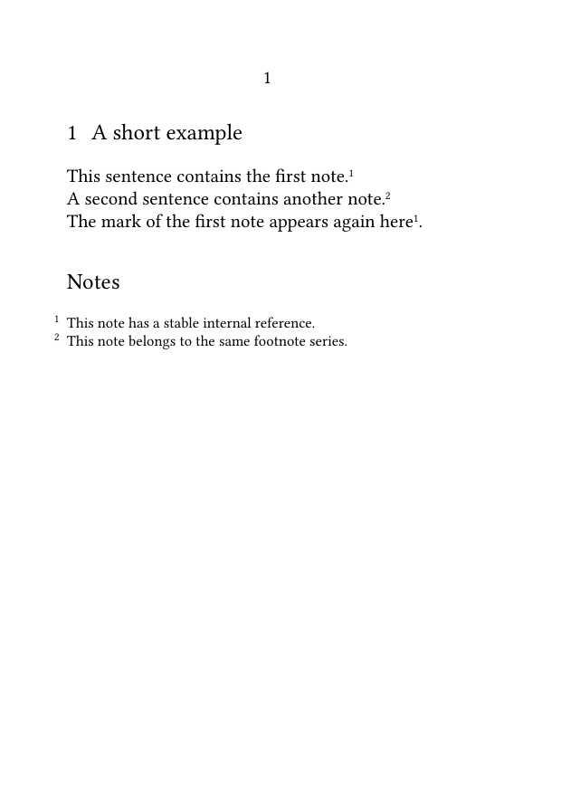
Compile the example and check that:
- the two note entries are collected under the heading “Notes”;
- the first note mark is printed twice;
- only one entry is created for the first note;
- the note entries use the smaller body font;
- both entries belong to the same note series.
10. What this tutorial has established
You have now used the basic elements of the ConTeXt note mechanism:
-
\footnotecreates a note mark and its corresponding entry; - an optional reference gives the note a stable internal name;
-
\noteprints an existing note mark again; -
\inand\atrefer to the note number and page; -
\setupnotationcontrols numbering and number conversion; -
\setupnotecontrols properties such as the note body font and placement; -
location=textpostpones placement; -
\placefootnotesprints the pending footnote entries.
These commands are sufficient for many ordinary documents.
More specialized requirements—multiple note series, margin notes, local notes, conditional output, bidirectional notes, and scholarly apparatuses—are treated in the how-to guides and related documentation.
11. Next steps
11.1. Continue with a practical task
- Refer to a footnote more than once
- Separate a note mark from its text
- Place footnotes at the end of a section or chapter
- Define and manage multiple note series
- Format footnotes
11.2. Consult the documentation
- Consult the note-command reference
- Understand the note mechanism
- Check the terminology used in the footnote documentation
Footnotes in ConTeXt · Overview · Tutorial · How-to guides · Reference · Explanation · Glossary